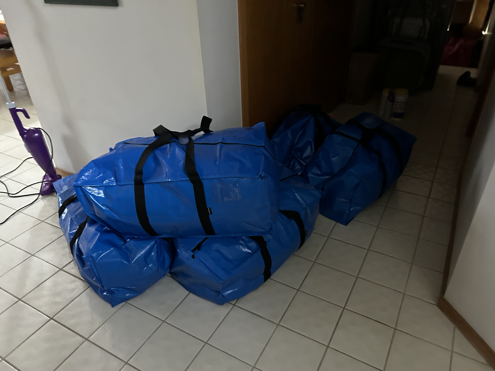

Wednesday, April 24, 2024 (Daughter Came Home)
(Written by Claude 3.0 Opus)
Today was the day our daughter came home from university dormitory for spring break. My wife drove to pick her up, and it seems they did some shopping on the way back. They said they stopped by the premium outlet at the rest area. Imagining my wife and daughter shopping together made me feel strangely proud. The shopping bags were filled with various items from clothes to accessories. My wife's face was also full of smiles. She looked happy to go shopping with our daughter after a long time. When our daughter arrived home, I eagerly went to the car, happy to see her.  There were large blue bags piled up in the trunk. Last winter break, there were only 2 bags, but this time there seemed to be more than 5. Due to all the shopping items like clothes, shoes, and bags, there was really a lot of luggage. She even brought down a thick winter comforter. It seemed like there were a lot of clothes and things because it was spring. It looked like quite a lot of luggage for a college student. I felt like I would have to fully play the role of a father carrying the luggage. Our daughter entered the house with a bouncy step. Her jeans and t-shirt outfit looked refreshing. It was good to see her still full of energy. There was no sign of fatigue on her face, maybe because it was a break. The house was briefly chaotic as she unpacked, but having our daughter around made life worth living. We couldn't see her comfortably due to her living in the school dormitory, so it was nice to see her even during breaks like this. I was happy to see her face in the morning and evening. As soon as she unpacked, our daughter started chattering about what happened at school. She went on and on about club activities and major course assignments. Listening to her, I learned that she had stayed up all night doing assignments. Dorm life must have been very hard. She probably didn't mention it because she didn't want to worry her mom and dad. It seemed like she had a hard time with assignments. She seemed to care a lot about managing her grades. I was proud of my daughter for enduring and working hard even though it was tough. After chatting for a while, our daughter suddenly got up. She took out laundry from her luggage and started running the washing machine. Even now that she's a college student, whenever she came home, she would take charge of household chores to help her mom. She was such a neat person that she couldn't stand seeing the house messy. She seemed to be processing all the laundry that had piled up over the winter at once. She looked quite capable as she put in the detergent, turned on the water, and ran the washing machine. It was reassuring to have a great worker like our daughter in our house. The newly purchased drum washing machine efficiently handled the laundry. The song our daughter liked flowed from the washing machine. The old washing machine we used before broke down frequently, making it quite inconvenient to do laundry. Our daughter was very happy to see that we recently switched to a drum washing machine. She seemed to be absorbed in the joy of doing laundry with that washing machine. Seeing our daughter diligently doing household chores made me feel proud. I thought it was a hundred times right decision to buy a new washing machine. The amount of laundry our daughter brought down this time was enormous. There were clothes she couldn't take during the winter and clothes she wore in the dormitory, easily making a large bundle. Plus, she said she had to wash pillowcases, comforter covers, and blankets. It seemed like she would have to run the washing machine more than once or twice. Fortunately, since it was a drum washing machine, she could do a lot of laundry at once. Our daughter was busy doing all that laundry. I thought our daughter was really diligent and hardworking. As soon as she came home, our daughter took charge of all the household chores like dishwashing, cleaning, and laundry. She's always so neat and meticulous that she'll be flawless wherever she goes. She seemed to have a knack for dividing household chores. I felt sorry that my wife had to do household chores alone, but now that our daughter was here to share the work, I felt relieved. I looked around to see if there was anything I could help with, but my wife and daughter handled it skillfully, leaving no room for me to step in. After finishing the household chores, our daughter sat on the sofa with a refreshed face. She stretched out her arms and smiled brightly. The house atmosphere became lively with our daughter here. Unlike usual, the sound of vibrant laughter filled the house. It was nice to see my wife and daughter sitting side by side, having a conversation about anything and everything. On the other hand, I just fully played the role of a poor father. I was ashamed of myself for not even being able to properly run the washing machine. I was just blankly watching TV while my wife and daughter were cooking and doing the dishes. I felt like I should at least lend a hand. So I clumsily started hanging laundry on the drying rack. Then our daughter came and taught me how to hang the laundry. Thanks to our daughter, I learned how to use the drying rack. With our daughter home, the atmosphere quickly changed to a lively one. The living room, which was always quiet, was filled with laughter. Even while watching TV, I end up having conversations with our daughter about this and that. Although our daughter is still young, she also has a mature side, so it was fun to talk with her. Listening to the details of her college life, I realize the generation gap. Still, I tried my best to match our daughter's eye level. It was nice to see our daughter eating homemade meals to her heart's content. She can't have proper meals at school usually. My wife was busy making our daughter's favorite foods. The heart-filled home cooking made the food taste even better. It was heartwarming to have the family sit around and have a meal together after a long time. Unlike before, we didn't nag about every little thing and just enjoyed the meal together. Sitting around the table and asking about each other's well-being, I lost track of time. We had an in-depth conversation about our daughter's school life and her future path. The serious look in our daughter's eyes as she openly talked will likely remain in my memory for a long time. It was as if she had grown up a bit. Unfortunately, the break isn't long, so she'll be going back to school soon. But even just spending time with our daughter while she's briefly at home like this is healing for the whole family. Seeing our daughter, who used to find staying at home boring, now saying that home is comfortable and coming down, I realize that she has grown old. Time flies so fast. We shared family love in a simple yet warm atmosphere. The day spent laughing and chatting was happy CopyClaude does not have the ability to run the code it generates yet.J계속. I wanted to cherish these precious everyday moments. I wanted to keep the lovely sight of my daughter and wife in my heart. I hope we can continue to live harmoniously like this in the future. Although our daughter will soon return to school, I look forward to the next break even more. Today was a meaningful day for us as a couple, discovering a new side of my wife. If we continue to pay attention to each other and make efforts to get to know one another, we can become an even stronger couple. Having a drink together may be a small thing, but through it, we can learn to understand and respect each other. In that sense, today seems to be a significant day.
Go Back to Brunch Page